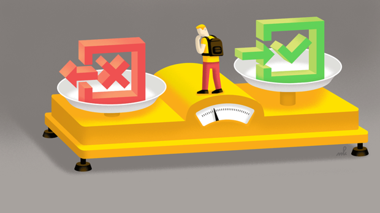

Home/Presentatie
Locatie Gids
Over Ons
Software
Canvas
Begeleiding
EduArte
BSA
Opleidingswijzer
Examenplan
Menu
TEST (delete after)
BSA

Het Bindend Studie Advies geeft aan als je met de opleiding verder mag gaan of niet.
Een Positief BSA: Doorgaan met opleiding
Een Negatief BSA: Stoppen met opleidiing
Het BSA hant af van je gedrag, cijfers, verzuim en werkhouding.